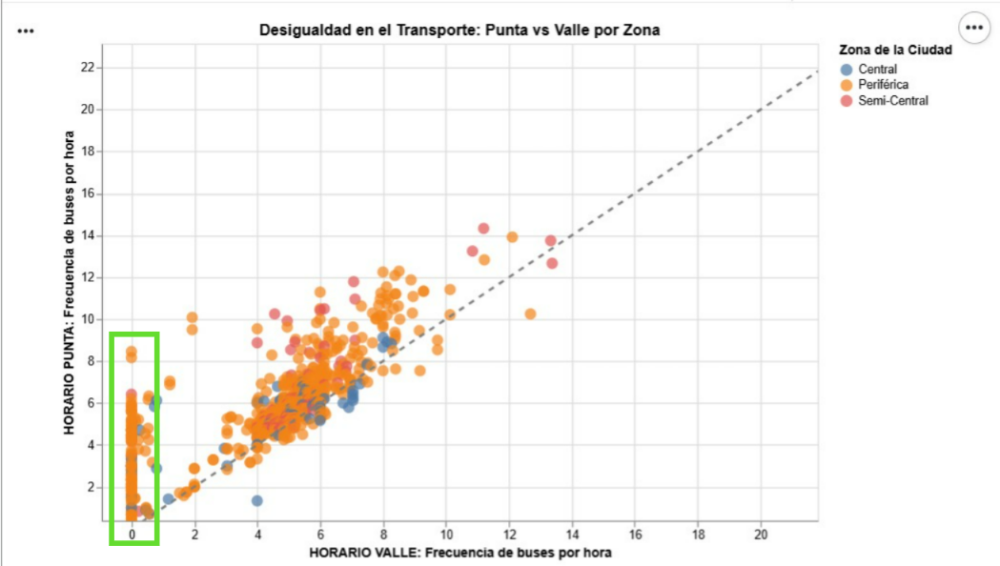
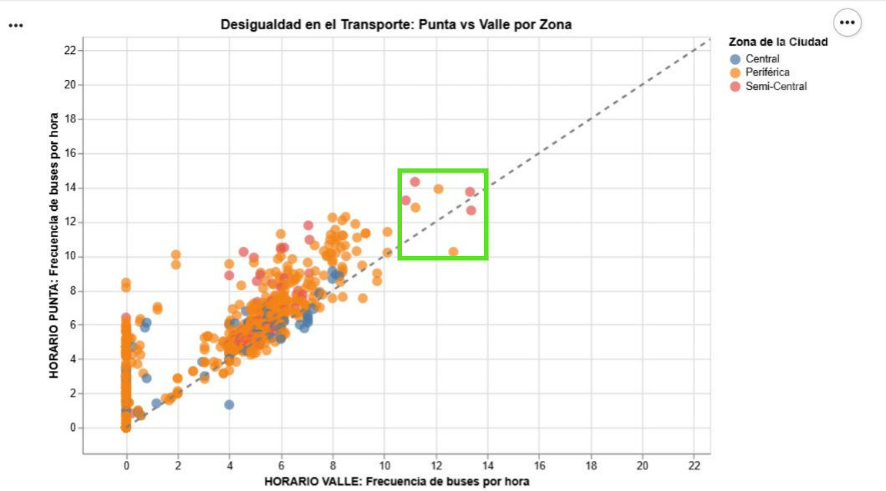
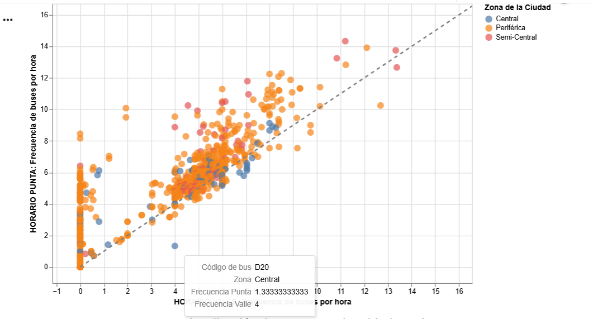

El transporte público no es solo un servicio, determina quién llega a tiempo a su destino y quién queda rezagado.
Se puede acercar y alejar el gráfico para entrar en los detalles de cada punto.
Cada punto representa un autobús del sistema RED de la Región Metropolitana. Al pasar el cursor por cada uno, aparecerá la siguiente información:

Al observar la visualización de datos, se muestra que los puntos que representan las rutas de la Zona Central tienden a agruparse en niveles de frecuencia más altos y estables. Mientras que las rutas de la Zona Periférica muestran una dispersión un poco mayor. La diferencia no es abismante como uno podría pensar.
Llama la atención la línea vertical que se produce en el eje "y". Esto se genera porque hay autobuses que solo circulan en el horario punta, y no en el valle. Lo anterior con el fin de amortiguar la gran demanda que existe en ese período. Si uno ve superficialmente, sin hacer mucho zoom el color naranjo de puntos es el dominante en esta línea, es decir, el de la zona periférica. Entonces se concluye que en el horario punta la zona que se compensa con mayor cantidad de autobuses es la perifércia.

Por otra parte, hay unos puntos más alejados de la concentración de puntos. Estos se combinan entre zona periférica y semi central. Si uno pasa por encima de estos se da cuenta que su frecuencia tanto en horario valle como en punta es mucho mayor que el resto de autobuses.

Mientras más cerca de la línea diagonal estén los puntos significa que esos autobuses tienen una frecuencia en el horario valle y punta muy similar o incluso igual. Por otra parte hay autobuses que tienen una frecuencia mucho mayor en un horario. Por ejemplo, lo que sucede con la D20, que es particularmente extraña pues en el horario valle tiene una frecuencia mucho mayor.

En conclusión, distinto a lo que las personas de la región Metropolitana puedan pensar, hay una gran compensación en la frecuencia de autobuses en zonas periféricas, sobre todo en horario punta.
Este es un link: sitio